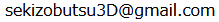

To the extent possible under law, the person who associated CC0 with this work has waived all copyright and related or neighboring rights to this work. This work is published from: 日本.
路傍や寺社にある庚申塔や道祖神などの石仏・石造物をフォトグラメトリ（SfM/MVS）で3Dモデル化し、オープンデータとしてアーカイブするプロジェクトです。
石造物の3Dモデル作成とWikimedia Commonsでの公開にご協力頂けるコントリビュータを募集しています。
上記のプロジェクトメンバーまたは下記のお問合せ先までご連絡下さい。

To the extent possible under law,
the person who associated CC0
with this work has waived all copyright and related or neighboring rights to this work.
This work is published from:
日本.